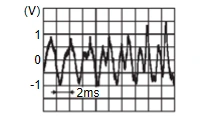

駕駛資訊與多媒體 - 音響、視覺與導航系統 - 遠距資通系統 - 故障碼/電路診斷 - B2E08-01 MICROPHONE
診斷程序
N5160402E003AU00ENG
1.
檢查麥克風訊號電路與麥克風電源供應電路的導通性
將點火開關轉至關閉。
斷開/拔除 TCU 接頭與麥克風接頭。
檢查 TCU 接頭與麥克風接頭之間的導通性。
TCU
麥克風
導通
接頭
端子
接頭
端子
M35
4
R8
3
存在
3
7
檢查 TCU 接頭與搭鐵之間的導通性。
TCU
搭鐵
導通
接頭
端子
M35
4
不存在
3
檢查結果是否正常？
是
前往步驟 2
.
否
修復或更換 線束 或 接頭。
2.
檢查麥克風電源電壓
連接 TCU 接頭與麥克風接頭。
將點火開關轉至 開啟。
檢查 TCU 接頭與搭鐵之間的電壓。
(+)
(−)
電壓
(約)
TCU
接頭
端子
M35
3
搭鐵
5.0 V
檢查結果是否正常？
是
GO TO 3
.
否
更換 TCU。請參閱
拆卸與安裝
.
3.
檢查麥克風訊號
檢查 TCU 接頭與搭鐵之間的訊號。
(+)
(−)
狀況
參考值
TCU
接頭
端子
M35
4
搭鐵
對著麥克風說話。

CF100CBMAA00ENG
檢查結果是否正常？
是
更換 TCU。請參閱
拆卸與安裝
.
否
更換麥克風。請參閱
拆卸與安裝
.
已加入書籤
書籤數量過多。
請刪除後重新加入書籤。
×